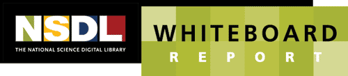

|
Research news and notes from the National Science, Technology, Engineering, Mathematics and Education Digital Library (NSDL) Program [Back Issues]  |
|
| September 2003, Issue #37 | |
|
TABLE OF CONTENTS
NEWS Upgraded NSDL Community Web Site September 2003-- The updated NSDL Community web site can now be found at http://comm.nsdl.org. This replaces the NSDL Communications Portal (http://comm.nsdlib.org) including email list services, interactive web spaces, and documents. Services at the web site were converted from a private SourceForge license to the Open Source GForge software. This upgrade continues support for a software development environment for NSDL projects and also provide backend software for the new community section being developed for NSDL.org. Thanks to Elly Cramer, Dean Eckstrom, Dean Krafft, and Alex Chaux for making this important change in a timely and professional manner.
Related Link: http://comm.nsdl.org Teaching Resources in Microbiology September 2003-- The American Society for Microbiology (ASM) MicrobeLibrary is a venue for publishing peer-reviewed teaching resources. The Library ever growing collection has three deadlines for review of submissions throughout the year: November 1st, March 1st, and July 1st. For information about submitting a resource to the Library, visit: http://www.microbelibrary.org/Submissions/page7.htm.
Related Link: http://www.microbelibrary.org BEN Collaborative Grows September 2003-- As a result The BEN Collaborative Partners Orientation and Advisory Board meetings held in May, the number of BEN partners has increased from fourteen to twenty-one. New BEN partners include: American Phytopathological Society, American Society for Cell Biology (ASCB), American Society of Plant Biologists (ASPB), Bio-Link (a National Advanced Technological Education (ATE) Center for Biotechnology), Botanical Society of America, Journal of Undergraduate Neuroscience Education, and the Society for Integrative and Comparative Biology (SICB). The BEN Portal has a catalog of 1,250 peer-reviewed biological sciences resources and 2,730 registered users.
Gender & Science Digital Library profiled in Christian Science Monitor September 2003-- The Gender & Science Digital Library & project director Sarita Nair were featured in a recent edition of the CSM's Learning edition (CSM, July 29, 2003). The focus of the story was on the use of technology to engage underrepresented populations in various sectors of education and the workforce. To read the complete article, please go to: http://www.csmonitor.com/2003/0729/p12s01-lecs.html
Related Link: http://www.ironfrog.com/catsmap.html Perseus Project's Gregory Crane to Give Opening Keynote at NSDL Annual Meeting September 2003-- Gregory Crane will launch the NSDL Annual Meeting in Washington D.C. on October 13 with a keynote address to the General Session. Crane holds a professorship in the Department of Classics at Tufts as well as the Winnick Family Chair in Technology and Entrepreneuship. His association with the well known Perseus Project began in 1986 and since 1988 he has been Editor-in- Chief.
In an interview with First Monday he said: "When I became an assistant professor in 1985, I collaborated with some other classicists to start work on what would become the Perseus Projec At the time, we had a dim sense of what a heterogeneous digital library might look like. We wanted to link every category of data that we used in print form in an electronic environment and then to see what would happen." Perseus has gone well beyond print and has become one of the most successful and well used digital libraries. Greg Crane is a man whose honors and recognition span the distance from the Lowell Prize for Excellence in Greek in 1977 to the 2001 Vannevar Bush Award for Best Paper at JCDL. He has much to tell about the ways in which digital libraries are the cognitive tools of the educational and intellectual world. Related Link: http://nsdl.org Upcoming BEN Workshops September 2003-- At the National Association of Biology Teachers (NABT) Annual Meeting being held October 8 -11, BEN Collaborative partners will be exhibiting and leading workshops on American Physiological Society's APS Archives, and the Ecological Society of America's EcoEdNet. More information on the NABT conference can be found at http://www.nabt.org/sup/conferences/
Related Link: http://www.nabt.org/sup/conferences Upcoming Conference Paper and Registration Deadlines September 2003-- Digital Library Federation (DLF) Fall Forum
November 17-Nov. 19, 2003, Albuquerque, New Mexico Call For papers: Deadline for proposals: September 22nd Registration deadline: October 31st International Conference on Digital Libraries (ICDL 2004): Knowledge Creation, Preservation, Access and Management February 24-27, 2004, New Delhi, India Call For papers: Submission of extended abstracts: September 30, 2003 Notification of acceptance of papers: October 30, 2003 Submission of full papers: December 15, 2003 Registration deadline: November 30, 2003 Related Link: http://www.teriin.org/events/icdl PROJECT PROFILE BOOKMARKS About BIOME September 2003-- BIOME is a collection of gateways which provide access to evaluated, quality Internet resources in the health and life sciences, aimed at students, researchers, academics and practitioners. BIOME is created by a core team of information specialists and subject experts based at the University of Nottingham Greenfield Medical Library, in partnership with key organisations throughout the UK and further afield.
Related Link: http://biome.ac.uk/about/ INSPIRATION http://www.ironfrog.com/catsmap.html September 2003-- See a global map of the library cat population of the world from Iron Frog Productions. If NSDL had a library cat where would it live?
Related Link: http://www.ironfrog.com/catsmap.html |
|
|
|
|
Whiteboard Report is published monthly by the National Science Digital Library Program, and includes information from NSDL projects and programs nationwide. PLEASE REDISTRIBUTE. Para leer este mensaje en espanol vaya: http://babelfish.altavista.com/translate.dyn. Co-editors are Cathy Manduca (cmanduca@carleton.edu), Outreach Coordinator, Digital Library for Earth System Education, DLESE, and Carol Terrizzi (clt6@cornell.edu), Communication Director, NSDL Cornell Core Integration, and Susan Van Gundy (vangundy@ucar.edu), Education and Outreach Specialist, NSDL Core Integration. Project leaders and participants from the NSDL Community are encouraged to send research news and notes of interestof 100 words or less with web links to additional information to Whiteboard Report. Please send submissions to whiteboard-editors@comm.nsdlib.org. |